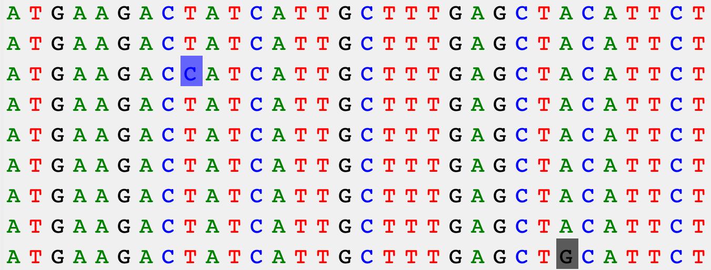
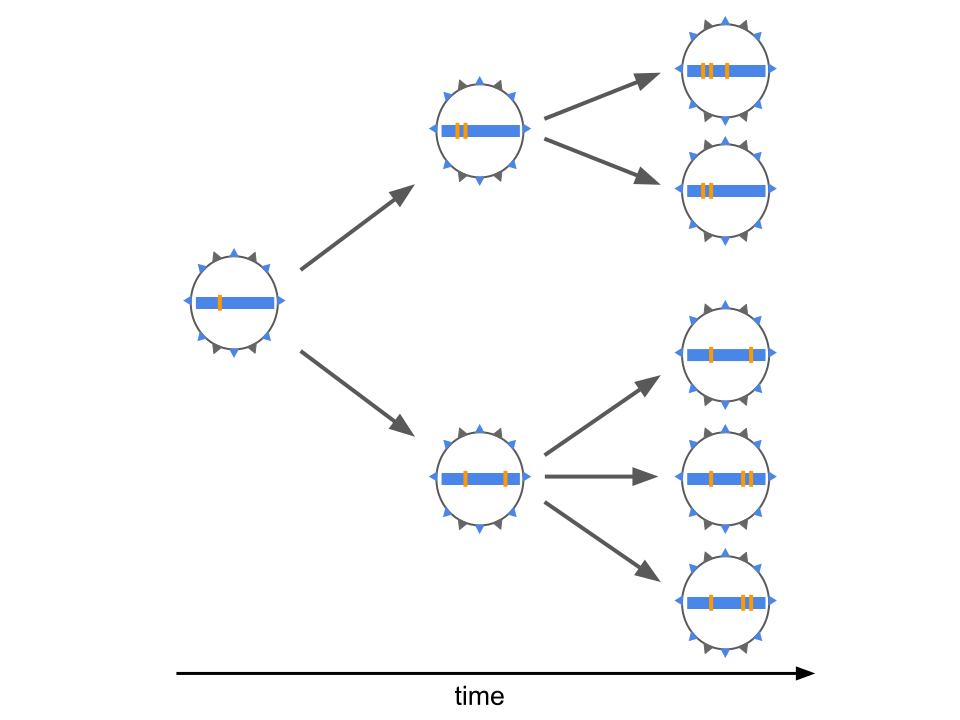
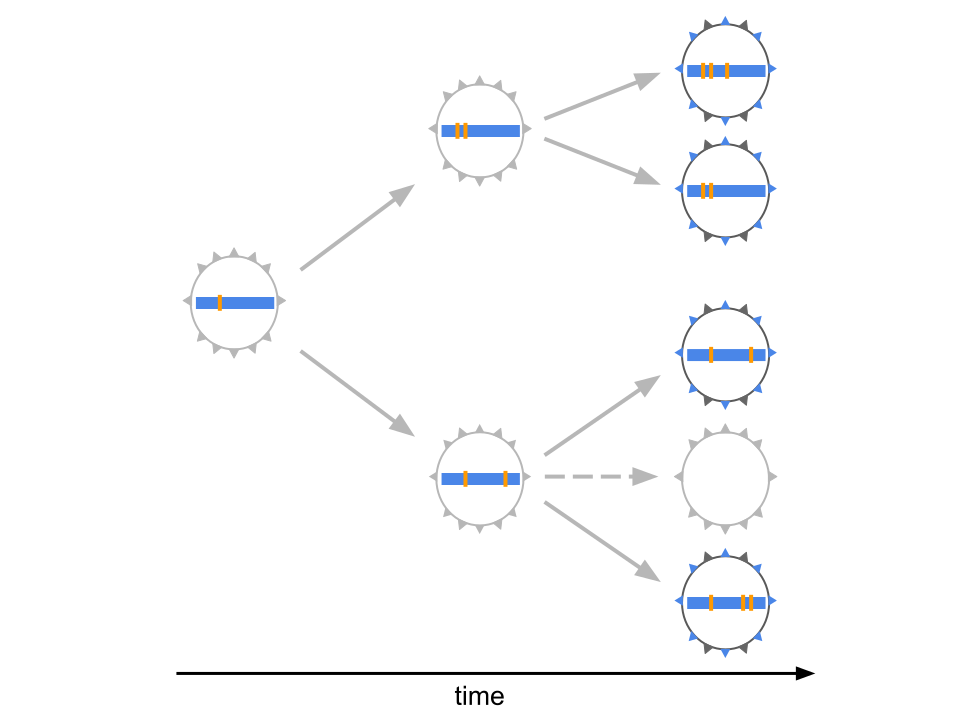
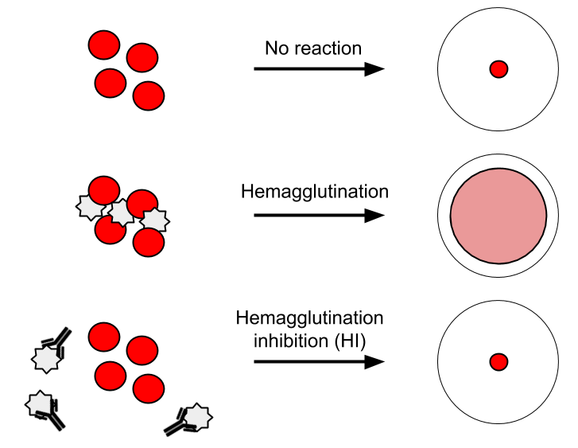

Visualization of seasonal influenza antigenic evolution
John Huddleston, PhD
Bedford Lab
Fred Hutchinson Cancer Research Center
March 18, 2022
Seasonal influenza kills 100,000s
of people every year

Photo: WHO / Tom Pietrasik
Surface proteins determine
influenza virus subtypes like H3N2

Hemagglutinin enables infection

Hemagglutinin is the primary target of our immune system
Mutations in hemagglutinin allow viruses to escape existing immunity

Mutations in hemagglutinin allow viruses to escape existing immunity

New vaccines take ~9 months
to make and distribute

The Global Influenza Surveillance and Response System tracks influenza year-round

{kind=link}
Surveillance groups sequence
the genetic code of viruses

Mutations in viral genomes tag specific viruses

Mutations allow us to reconstruct viral trees

Visualizing genomes as an inferred genealogy reveals related groups of viruses

Which single virus should be in the next vaccine?
Experimental assays identify viruses
that could escape our immunity

Assays provide antigenic distances
Historically, distances were viewed as tables
After Neher et al. 2016
Visualization as tables does not scale well
Antigenic cartography reduces
high dimensionality
Bayesian antigenic cartography integrates
assays and genetic data
Antigenic trees map assays to phylogenies
and infer missing data
Antigenic trees synthesize all assay data
into a single visualization
Scatterplot trees encode antigenic distance
on a positional axis
Matrix view emphasizes coverage by
each serum of test viruses by clade
Data from Bedford et al. 2014
Distribution view communicates uncertainty about coverage of test viruses by clade
Data from Bedford et al. 2014
Distributions with raw data reveal details about coverage of test viruses by clade
Data from Bedford et al. 2014
Interactive visualizations support
multiple views on the data
Data from Bedford et al. 2014
Composite tree and measurements views provide all information required for decision making
Data from Bedford et al. 2014
Implementation complexity hinders
domain-specific visualizations

Thank you!
|
Fred Hutch Cancer
|
Collaborators
Data Sources
|
Funding
|
Continue the conversation
By email at jhuddles@fredhutch.org
In public at discussion.nextstrain.org
In private at hello@nextstrain.org